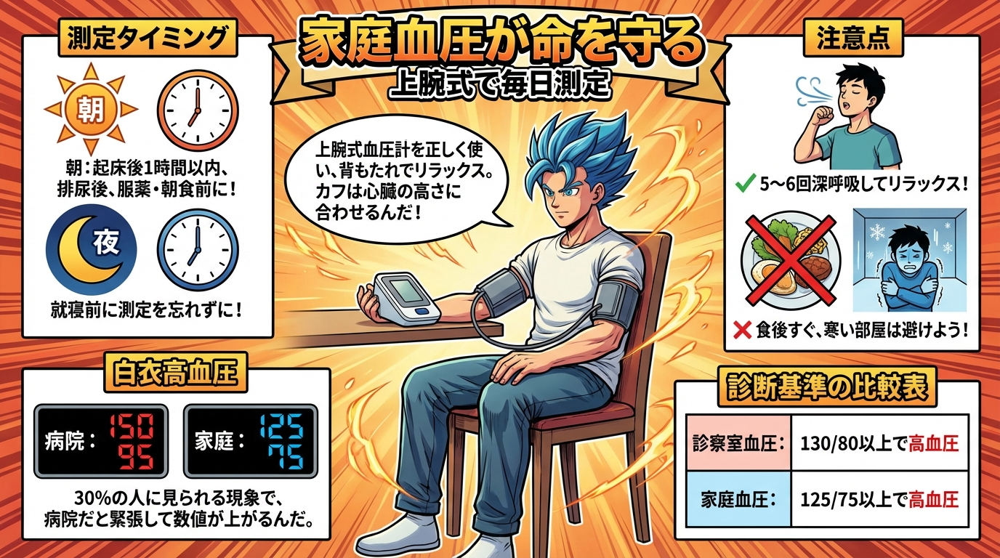
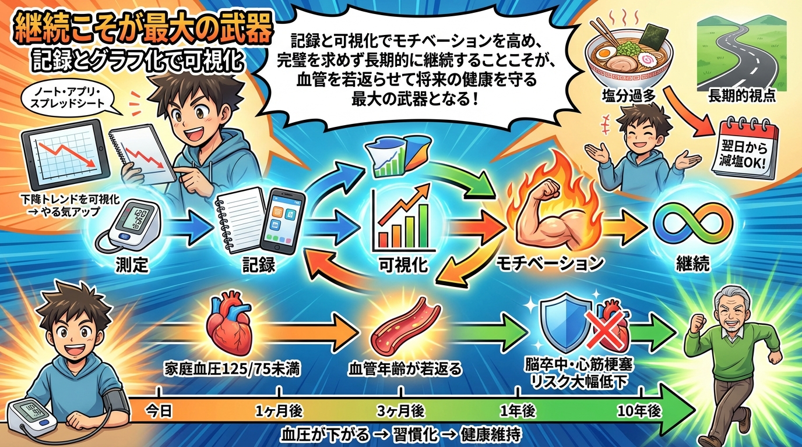

📊 血圧130未満の真実と実践管理術
画像ギャラリー - 全6図解 + 4コマ漫画
📖 4コマ漫画

📐 図解一覧

第1章: なぜ130未満なのか - 2025年ガイドラインの衝撃

第2章: 家庭血圧測定こそが最強の予防ツール

第3章: DASH食+減塩 - 日本人に最適な食事戦略

第4章: 運動習慣が血圧に与える驚きの効果

第5章: 見逃されがちな生活習慣の改善ポイント

第6章: 血圧130未満を維持するための継続戦略